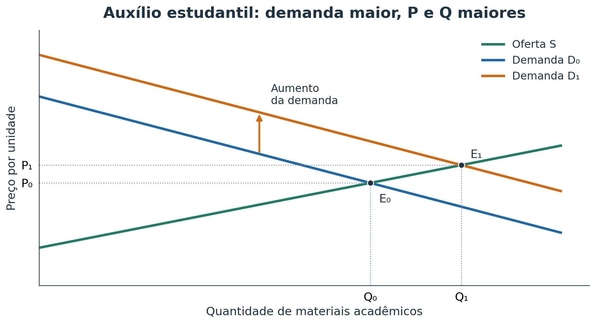
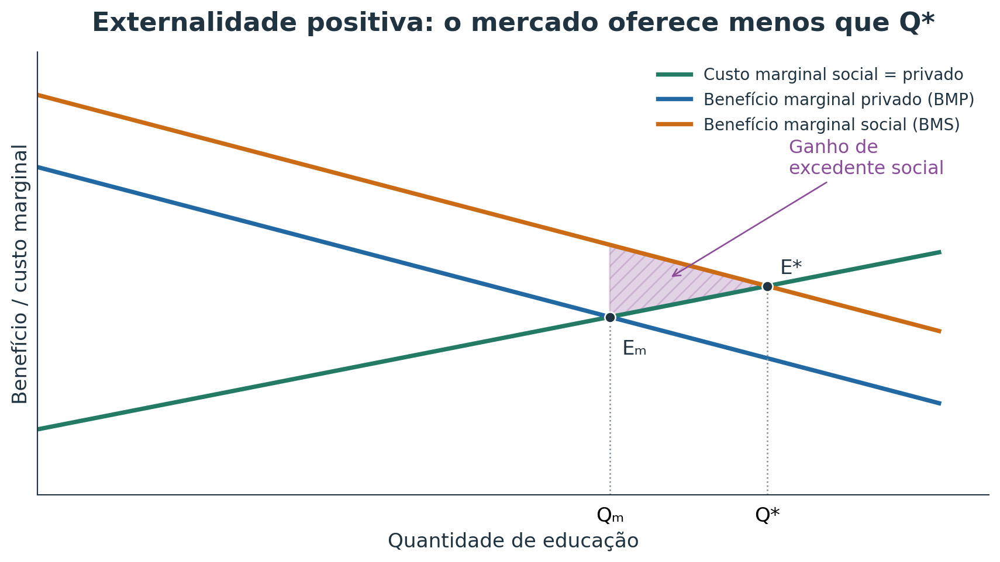
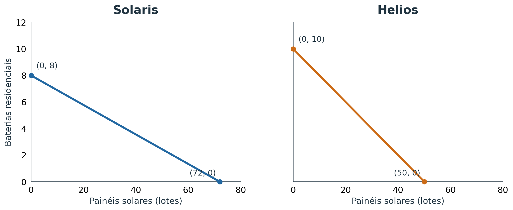
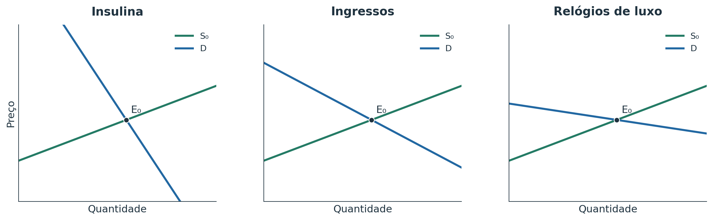
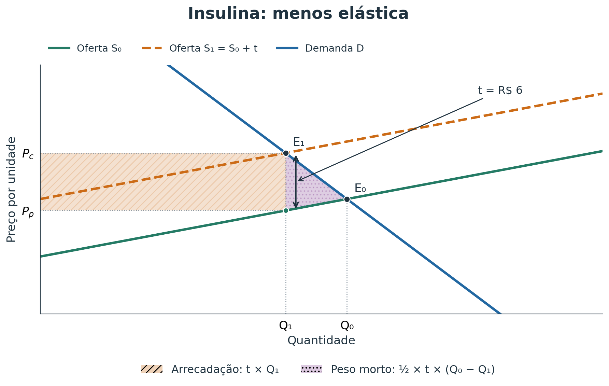
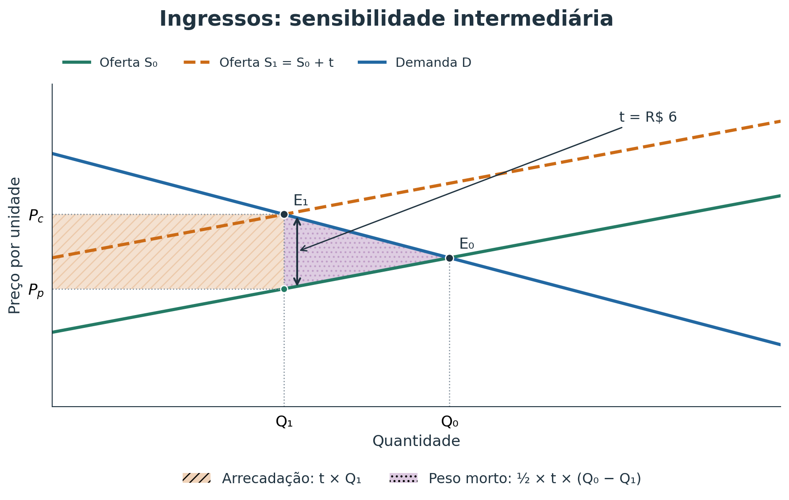
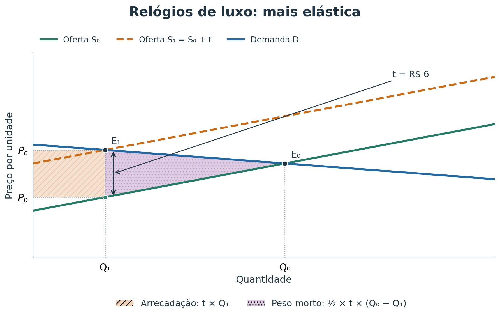

10 princípios, conceitos e questões com respostas
Questões discursivas: 13. Auxílio e educação · 14. CPP e vantagens · 15. Tributação
Em cada questão, clique em Resposta para abrir ou fechar o gabarito comentado.
Rafael pode participar de um projeto sem bolsa ou trabalhar no mesmo horário por R$ 120. Se escolher o projeto, considere:
I. os R$ 120 integram seu custo de oportunidade;
II. a decisão pode ser racional se ele valorizar mais a experiência;
III. por ser gratuito, o projeto não tem custo econômico;
IV. uma bolsa mudaria os incentivos. Estão corretas:
Gabarito: B.
I, II e IV. O trabalho abandonado vale R$ 120; a experiência pode compensar esse custo. Não pagar mensalidade não elimina o custo econômico. A bolsa muda os incentivos.
Uma academia passou a cobrar taxa apenas de quem reserva aula e falta. As ausências diminuíram. O episódio ilustra principalmente:
Gabarito: A.
A cobrança aumenta o custo de reservar e faltar. A mudança de comportamento evidencia resposta a incentivos.
Marina já decidiu comprar um computador e agora compara o ganho de desempenho de mais memória com R$ 400 adicionais. Seu raciocínio exemplifica:
Gabarito: A.
Marina compara o benefício de memória adicional com o custo adicional de R$ 400. Trata-se de análise marginal.
Uma prefeitura financia iluminação de ruas, serviço do qual seria difícil excluir moradores que não contribuíssem. A situação mostra que:
Gabarito: B.
A dificuldade de excluir não contribuintes favorece o problema do carona e pode justificar financiamento coletivo.
I. A tarifa subiu 8%.
II. Tarifa maior reduz, ceteris paribus, viagens demandadas.
III. A prefeitura deveria congelar a tarifa.
IV. Cobrar mais dos pobres é injusto. A classificação correta é:
Gabarito: A.
I relata um fato; II apresenta uma hipótese testável. III recomenda uma política; IV expressa um julgamento de justiça.
“O desemprego é maior entre jovens; por isso o governo deve reduzir encargos, pois é a política mais justa.” A frase:
Gabarito: C.
O desemprego dos jovens é uma afirmação positiva. A recomendação de política e o critério de justiça são normativos.
“O Banco Central reduziu os juros” e “o Banco Central deveria reduzi-los mais” são, respectivamente:
Gabarito: B.
A primeira frase descreve uma decisão observável. A segunda diz o que deveria ocorrer.
Dois pesquisadores concordam que um imposto reduziu o consumo, mas discordam sobre se ele é justo. A divergência é:
Gabarito: B.
Os pesquisadores concordam com o efeito do imposto, mas divergem sobre o julgamento de justiça: a divergência é normativa.
Novos equipamentos permitem a uma universidade realizar mais pesquisas e mais cursos com os mesmos trabalhadores. A CPP:
Gabarito: B.
A tecnologia amplia as combinações máximas possíveis de pesquisas e cursos: a fronteira se desloca para fora.
Uma economia produz no máximo 120 A ou 60 B, com CPP linear.
I. custo de 1 B=2 A;
II. custo de 1 A=0,5 B;
III. 60 A e 30 B está na CPP;
IV. 100 A e 40 B é factível. Estão corretas:
Gabarito: B.
I, II e III. A CPP é A/120 + B/60 = 1. O ponto (60, 30) atende à igualdade; (100, 40) exige mais recursos que os disponíveis.
Uma enchente destrói parte das máquinas sem avanço tecnológico compensatório. A CPP tende a:
Gabarito: B.
A destruição de máquinas reduz a capacidade produtiva. Sem compensação tecnológica, a fronteira recua.
A ordem de preferência de Luiza é Economia, Direito, Administração e História. Se só pode escolher um curso e escolhe Economia, o custo de oportunidade acadêmico é:
Gabarito: B.
O custo de oportunidade é Direito, a melhor alternativa abandonada. Não se somam todos os cursos preteridos.
Equilíbrio R$18; mínimo R$25; a R$25, Qo=900 e Qd=600. O resultado é:
Gabarito: B.
A R$ 25, a quantidade ofertada supera a demandada em 900 − 600 = 300 unidades.
Aluguel de equilíbrio R$1.500; máximo R$1.000. Espera-se:
Gabarito: B.
O teto fica abaixo do preço de equilíbrio. Nesse preço, a quantidade demandada supera a ofertada.
Equilíbrio R$40; mínimo R$30. A medida:
Gabarito: C.
O preço mínimo de R$ 30 está abaixo do equilíbrio de R$ 40 e, portanto, não restringe o mercado.
Uma geada eleva o equilíbrio de R$10 para R$16. Um máximo de R$12, antes irrelevante, agora:
Gabarito: A.
O teto de R$ 12 passa a ficar abaixo do novo equilíbrio de R$ 16 e torna-se vinculante.
Benefícios à saúde elevam a procura por peixe e novas técnicas reduzem custos de criação. No novo equilíbrio:
Gabarito: B.
Demanda e oferta deslocam-se para a direita. Os dois efeitos elevam Q, mas atuam em sentidos opostos sobre P.
Queda de renda reduz procura por restaurantes e energia mais cara reduz oferta. Pode-se afirmar que:
Gabarito: A.
Demanda e oferta recuam. Os dois efeitos reduzem Q; o efeito final sobre P depende da intensidade dos deslocamentos.
Preferência por bicicletas elétricas aumenta e componentes ficam mais caros. Logo:
Gabarito: A.
A demanda aumenta e a oferta diminui. Ambos elevam P; o resultado sobre Q é indeterminado sem informações adicionais.
Para um bem normal, renda cai e inovação reduz custos. Logo:
Gabarito: B.
A menor renda reduz a demanda pelo bem normal; a inovação amplia a oferta. Os dois efeitos reduzem P.
Um medicamento tem demanda muito inelástica e oferta elástica. Após imposto, a maior parcela tende a recair sobre:
Gabarito: A.
A demanda relativamente menos elástica torna os compradores menos capazes de reduzir suas compras diante do imposto.
A lei manda vendedores recolherem o imposto, mas parte é repassada aos compradores. Isso mostra que:
Gabarito: B.
A obrigação legal de recolher o imposto não define seu encargo final. O ajuste dos preços reparte o custo entre os dois lados.
Um imposto elimina trocas cujo benefício excedia o custo. A perda de excedente dessas trocas é:
Gabarito: B.
Essas trocas criariam excedente, mas deixam de ocorrer. A perda é peso morto, e não receita transferida ao governo.
Com mesma oferta, demanda A é inelástica e B elástica. O mesmo imposto tende a reduzir mais a quantidade em:
Gabarito: B.
Comparando o mesmo equilíbrio inicial e a mesma oferta, a demanda mais elástica implica maior redução de Q para o mesmo imposto.
Pizza e refrigerante são complementares; pizza e hambúrguer, substitutos. Refrigerante encarece fortemente. Espera-se:
Gabarito: A.
A é a resposta pretendida no roteiro: refrigerante mais caro reduz a atratividade da pizza e, admitindo substituição de refeições, favorece o hambúrguer. O aumento da demanda de hambúrguer exige essa hipótese adicional; não decorre necessariamente apenas das relações entre os pares de bens apresentados.
Uma campanha torna chá mais popular; chá e café são substitutos. O preço do café não muda. A demanda de café:
Gabarito: B.
A preferência pelo chá reduz a demanda de café mesmo sem alteração no preço do café: deslocamento para a esquerda.
O preço das passagens aéreas cai, ceteris paribus. O aumento das viagens compradas é:
Gabarito: B.
A mudança no preço do próprio serviço provoca movimento ao longo da demanda, mantendo os demais determinantes constantes.
Impressoras e cartuchos são complementares. Impressoras ficam muito mais baratas. A demanda por cartuchos tende a:
Gabarito: B.
Impressoras mais baratas favorecem sua aquisição e elevam a demanda pelo bem complementar, os cartuchos.
\[|E_d|=\left|\frac{\%\Delta Q_d}{\%\Delta P}\right|\]
Streaming aumenta preço 6% e perde 12% dos assinantes. A empresa diz que a demanda é pouco sensível. A conclusão:
Gabarito: B.
A razão entre as variações percentuais é 12/6 = 2. A quantidade reage proporcionalmente mais que o preço.
Medicamento sobe 10% e Qd cai 2%. |Ed| é:
Gabarito: A.
A elasticidade em módulo é 2/10 = 0,2, inferior a 1: demanda inelástica.
Preço de A e B sobe 5%; Qd de A cai 1% e de B 15%. A demanda mais sensível é:
Gabarito: B.
A: 1/5 = 0,2. B: 15/5 = 3. A demanda de B é mais sensível à mudança do preço.
Se |Ed|=1, então:
Gabarito: C.
Elasticidade unitária significa variações percentuais de igual magnitude e sentidos opostos para uma demanda decrescente.
Famílias assistem a fogos financiados pelos vizinhos sem contribuir. Isso é:
Gabarito: B.
Os não contribuintes aproveitam o espetáculo. O problema é a dificuldade de excluir quem não paga.
Em pesca de livre acesso, cada pescador captura o máximo e o estoque se esgota. Isso é:
Gabarito: B.
O peixe capturado por um pescador deixa de estar disponível aos demais. Rivalidade e livre acesso favorecem a sobreutilização.
Uma tecnologia cara de desenvolver pode ser copiada a baixo custo depois de descoberta. Patentes procuram:
Gabarito: B.
A exclusividade temporária procura permitir a recuperação dos gastos de desenvolvimento e preservar incentivos à inovação.
Recursos comuns:
I. rivais;
II. difícil exclusão;
III. sujeitos à sobreutilização;
IV. têm exatamente o mesmo problema de bens públicos. Corretas:
Gabarito: B.
I, II e III. Recursos comuns são rivais; bens públicos puros são não rivais. Seus problemas não são idênticos.
Casa noturna amplia horário e moradores suportam ruído sem compensação. Trata-se de:
Gabarito: A.
O ruído afeta terceiros sem que esse dano seja plenamente incorporado à decisão da casa noturna.
Vacinação reduz risco também para terceiros. O benefício adicional é:
Gabarito: A.
A redução da transmissão beneficia outras pessoas além de quem se vacina: benefício externo positivo.
Café encarece e consumidores migram para chá, beneficiando vendedores de chá. Isso não é normalmente externalidade porque:
Gabarito: A.
O efeito descrito passa pela substituição entre bens e pelo sistema de preços; não é, em geral, uma externalidade tecnológica.
Indústria polui rio usado por pescadores e não compensa o dano. Logo:
Gabarito: A.
O custo privado omite o dano aos pescadores. O custo social inclui o custo de produção e o dano externo.
Bares geram ruído. A prefeitura estuda taxa por ruído e moradores propõem negociar horários.
I. ruído pode ser externalidade;
II. taxa pode ser pigouviana;
III. negociação lembra Coase com direitos definidos e baixos custos de transação;
IV. sem intenção de prejudicar não há externalidade. Corretas:
Gabarito: C.
I, II e III. A existência da externalidade independe da intenção de causar o dano.
Governo cobra imposto por unidade de poluição equivalente ao dano marginal externo. O objetivo principal é:
Gabarito: B.
A cobrança incorpora o dano externo ao incentivo privado. No modelo básico, o imposto corretivo corresponde ao dano marginal no ótimo social.
Dois vizinhos divergem sobre fumaça; direitos são claros e negociar é barato. Segundo Coase:
Gabarito: A.
Direitos definidos e baixos custos de negociação permitem acordos que internalizem o efeito externo, sob as hipóteses do teorema.
Uma externalidade envolve milhares de agentes dispersos e negociar é caro. A solução coasiana fica mais difícil porque:
Gabarito: A.
Identificar participantes, negociar, fiscalizar e executar acordos torna-se mais difícil com muitos agentes dispersos.
| Excludente | Não excludente | |
|---|---|---|
| Rival | Bem privado | Recurso comum |
| Não rival | Bem de clube | Bem público |
I. iluminação pública;
II. peixe em área de livre acesso;
III. refeição comprada;
IV. streaming por assinatura sem congestionamento. A classificação correta é:
Gabarito: A.
Iluminação: público. Peixe livre: comum. Refeição: privado. Streaming por assinatura sem congestionamento: clube.
Um parque de livre acesso torna-se congestionado quando há muitos visitantes. Isso mostra que:
Gabarito: A.
O congestionamento faz o uso por uma pessoa reduzir a qualidade ou a disponibilidade para outras: surge rivalidade.
Uma emissora aberta transmite sinal que pode ser assistido simultaneamente por milhões e é difícil excluir não pagantes. Aproxima-se de:
Gabarito: A.
O sinal aproxima-se de um bem público: uso simultâneo e dificuldade de excluir quem não paga.
Um estoque pesqueiro de livre acesso difere de um bem público puro porque:
Gabarito: A.
O peixe retirado reduz o estoque disponível. Essa rivalidade distingue o recurso comum do bem público puro.
O governo de determinado estado criou o programa Conecta Universidade, que concede mensalmente um auxílio financeiro de R$ 350 a estudantes de baixa renda matriculados no ensino superior.
Para continuar recebendo o benefício, o estudante deve manter frequência mínima nas disciplinas. O programa busca reduzir a evasão e permitir melhores condições de permanência na universidade.
Após os primeiros pagamentos, livrarias e estabelecimentos próximos aos campi registraram aumento significativo na procura por livros, materiais de estudo, computadores básicos e outros produtos utilizados pelos estudantes.
a) Mercado de materiais acadêmicos
Utilizando um gráfico de oferta e demanda:
b) Educação e benefícios sociais
Estudos sobre permanência universitária indicam que a conclusão do ensino superior pode produzir benefícios que ultrapassam o próprio estudante, como maior produtividade, difusão de conhecimento e redução de determinados problemas sociais.
a) Mercado de materiais acadêmicos
Considerando materiais acadêmicos como bens normais e oferta constante, o auxílio amplia a demanda. O novo equilíbrio tem preço e quantidade maiores.

O auxílio amplia a capacidade de compra dos beneficiários: demanda para a direita, com \(P_1>P_0\) e \(Q_1>Q_0\).
| Grupo | Efeito a considerar |
|---|---|
| Beneficiados | Recebem a transferência, mas parte do ganho de poder de compra pode ser absorvida pelos preços maiores |
| Não beneficiados que compram esses materiais | Enfrentam preços maiores sem receber o auxílio |
Os efeitos sobre o bem-estar diferem entre os estudantes; não há ganho uniforme para todos.
b) Externalidade positiva da educação
A difusão de conhecimento e outros benefícios para terceiros constituem uma externalidade positiva. Como parte do benefício social não entra na decisão privada, a quantidade de mercado pode ficar abaixo da socialmente eficiente.

BMS > BMP e Qₘ < Q. Entre Qₘ e Q, o benefício social de ampliar a educação supera seu custo marginal.
Salários maiores são retornos privados. O ganho de produtividade caracteriza externalidade quando beneficia terceiros, por exemplo pela difusão de conhecimento.
Duas empresas produzem painéis solares e baterias residenciais. Suponha CPP lineares, a mesma quantidade de recursos produtivos e o mesmo período de produção para as duas empresas.
| Empresa | Apenas painéis solares | Apenas baterias residenciais |
|---|---|---|
| Solaris | 60 lotes | 30 baterias |
| Helios | 20 lotes | 20 baterias |
a) Represente as CPP e identifique os interceptos.
b) Calcule o custo de oportunidade de cada produto em cada empresa.
c) Identifique as vantagens absolutas.
d) Identifique as vantagens comparativas e justifique.
a) Curvas de possibilidades de produção

Eixo horizontal: lotes de painéis. Eixo vertical: baterias. A CPP da Solaris liga os pontos \((60,0)\) e \((0,30)\); a da Helios liga \((20,0)\) e \((0,20)\). As retas representam custos de oportunidade constantes.
b) Custos de oportunidade
\[CO(1\text{ bateria})=\frac{\text{máximo de lotes de painéis}}{\text{máximo de baterias}}\]
| Empresa | Custo de 1 bateria | Custo de 1 lote de painéis |
|---|---|---|
| Solaris | \(60/30=2\) lotes | \(30/60=1/2\) bateria |
| Helios | \(20/20=1\) lote | \(20/20=1\) bateria |
O custo de oportunidade é medido em unidades do produto sacrificado.
c) Vantagem absoluta
A Solaris tem vantagem absoluta nos dois bens: com a mesma quantidade de recursos e no mesmo período, pode produzir mais painéis (\(60>20\) lotes) e mais baterias (\(30>20\)).
d) Vantagem comparativa
| Produto | Menor custo de oportunidade | Vantagem comparativa |
|---|---|---|
| Painéis solares | Solaris sacrifica \(1/2\) bateria por lote; Helios sacrifica 1 | Solaris |
| Baterias | Helios sacrifica 1 lote de painéis por bateria; Solaris sacrifica 2 | Helios |
A Helios tem vantagem comparativa em baterias mesmo sem ter vantagem absoluta em nenhum dos bens. A vantagem absoluta depende da produtividade; a comparativa depende do custo de oportunidade.
Para financiar novas despesas públicas, o governo instituiu um imposto específico de R$ 6 por unidade sobre:
Antes do imposto, os mercados apresentam condições comparáveis e ofertas com a mesma inclinação.
Nos gráficos desta aula: mesma oferta, mesmo equilíbrio inicial e mesmas escalas. Apenas a inclinação das demandas varia.

a) Representação e arrecadação
Desenhe a nova oferta, o novo equilíbrio, a cunha tributária, a nova quantidade transacionada e a arrecadação. Identifique a maior e a menor arrecadação e justifique pela elasticidade.
b) Bem-estar
Compare o peso morto dos mercados. Explique por que arrecadar mais não significa perder mais bem-estar.
c) Incidência
Explique por que o encargo econômico não depende apenas de quem deve legalmente recolher o imposto.
a) Representação gráfica e arrecadação
O imposto desloca a oferta verticalmente para cima em R$ 6. A demanda mantém sua posição. No novo equilíbrio, a diferença entre o preço pago pelo comprador e o preço líquido recebido pelo vendedor é igual ao imposto.
Insulina

A menor reação de Q preserva uma base tributável maior. A arrecadação é a maior e o peso morto é o menor, nas condições comparáveis do exercício.
Ingressos para festivais

A queda de Q, a arrecadação e o peso morto ocupam posição intermediária entre os outros dois mercados.
Relógios de luxo

A maior reação de Q reduz mais a base tributável. A arrecadação é a menor e o peso morto é o maior, nas condições comparáveis do exercício.
a) e b) Arrecadação e bem-estar
| Mercado | Redução de Q | Arrecadação | Peso morto |
|---|---|---|---|
| Insulina | Menor | Maior | Menor |
| Ingressos | Intermediária | Intermediária | Intermediário |
| Relógios de luxo | Maior | Menor | Maior |
\[R=tQ_1,\qquad PM=\frac{1}{2}t(Q_0-Q_1)\quad\text{(curvas lineares)}.\]
c) Incidência tributária
O imposto cria uma diferença entre o preço pago pelo comprador e o preço líquido recebido pelo vendedor:
\[P_c-P_p=t.\]
No modelo competitivo, cobrar o mesmo imposto por unidade do comprador ou do vendedor gera o mesmo resultado de mercado.
Esta aula reúne os dois roteiros enviados pelo professor:
Foram preservadas as questões objetivas e suas alternativas, removidos resíduos de títulos entre páginas e acrescentados comentários didáticos às respostas. Na questão discursiva 14, os números foram adaptados para simplificar os custos de oportunidade e distinguir vantagem absoluta de vantagem comparativa.
Os gráficos foram redesenhados a partir das relações econômicas dos enunciados. São representações esquemáticas, sem pretensão de estimar mercados reais.
Princípios da Economia: síntese didática dos dez princípios apresentados por N. Gregory Mankiw, com explicações breves em linguagem própria.